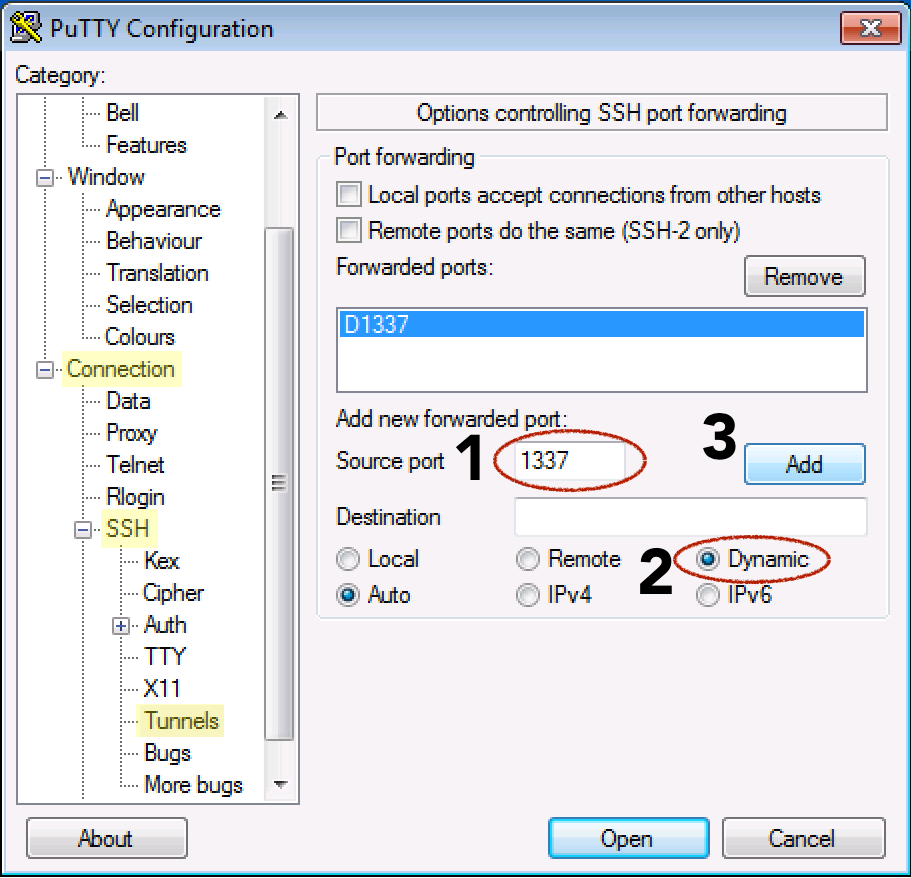
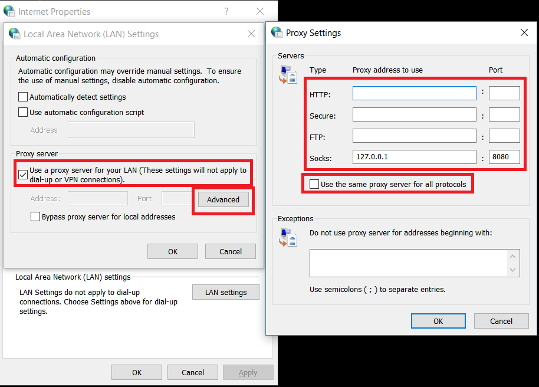

SOCKS proxy via SSH
Contents
References
- How to tunnel Internet traffic over SSH in Windows (the guide that finally works for me)
- How To Route Web Traffic Securely Without a VPN Using a SOCKS Tunnel
- Tunneling protocols Wikipedia
Overview
For proxy/tunneling, there're several options:
-
Per-application based, there's SSH port forwarding.
Server setup is easy. You only need the regular configured SSHD. This is the easiest to setup and use. Just fire the proper SSH command and point your application to the locally bind port.
-
Next is the SOCKS proxy - this works at the web application level so any application (mostly browsers) that supports SOCKS can use it.
Server setup is still easy. You only need the regularly configured SSHD. Client setup is also easy, fire up the command but compared to portforwarding you'll also setup proxy settings. This setting is usually in OS or app.
-
VPN server
Hardest to setup on the server side. There're two types - OpenVPN, SSH layer 3 tunneling.
Here we are going to talk about #2.
SOCKS Server Side
Server side, you only need regularly configured SSHD. Whenver SSH can connect, SOCKS should work.
SOCKS Client Side - Enabling SOCKS
On client side, to enable SOCKS proxy, issue this command:
ssh -D <socks_port> <user@remote_host>
This gives you an SSH session to the remote host AND also enables SOCKS on local machine. If you don't want to access the SSH session interactively and would rather prefer it to stay in the background (i.e., hidden from UI), use the following command which has extra arguments:
ssh -D <socks_port> -f -C -q -N <user@remote_host>
where socks_port is the local port of the SOCKS proxy.
You can also use putty:

SOCKS Client Side - Configuring Applications
Then to configure application to use SOCKS, in Windows, you can configure via "internet options" -> "connection" tab -> "proxy server" -> "advanced". Here's it:

Note that you need to uncheck "use the same proxy server for all protocols", clear HTTP, Secure, FTP fields. And only fill Socks field. This is the guide that works for me. This is thorough, but didn't mention the above critical setting.